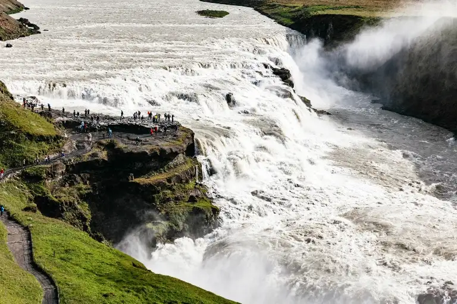
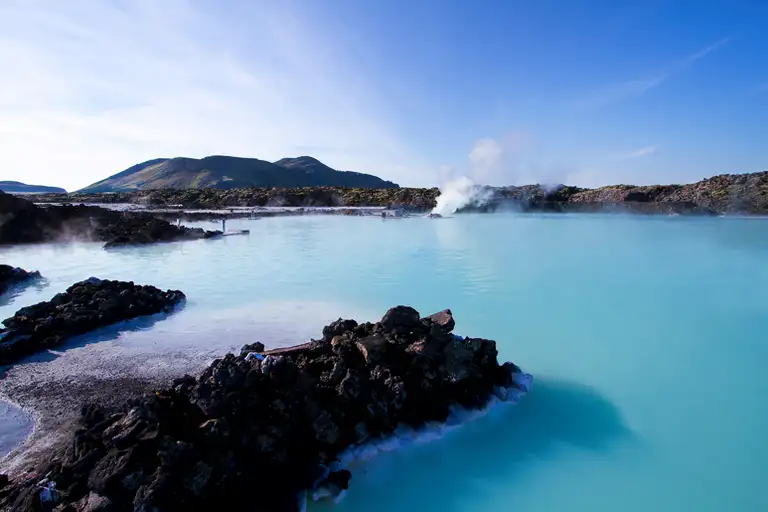
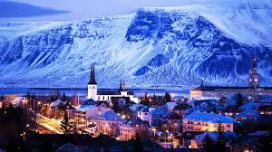
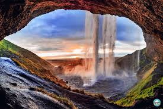
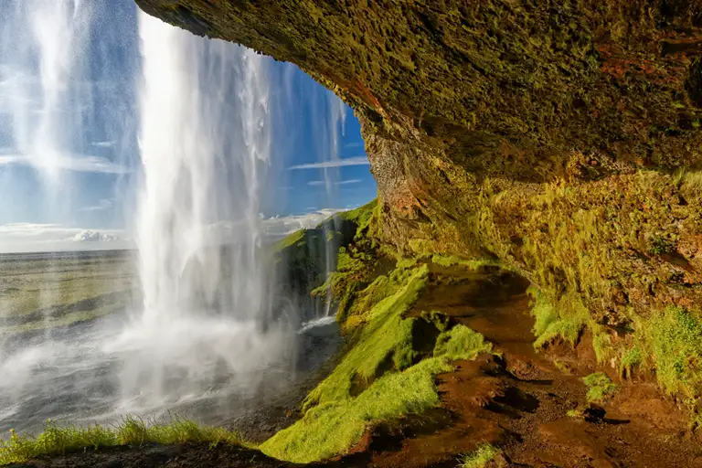
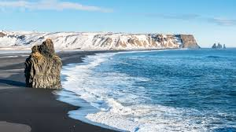
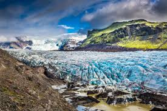

About Iceland
Iceland is a Nordic island country known for its stunning landscapes, geysers, hot springs, and volcanoes. It is a beautiful island country known for its breathtaking natural landscapes, including volcanoes, glaciers, waterfalls, and hot springs. It is a popular tourist destination for nature lovers and adventure seekers, offering unique experiences such as the Northern Lights, ice caves, and scenic coastal views.
Top Attractions
- Golden Circle
- Blue Lagoon
- Reykjavík
- Seljalandsfoss Waterfall
- Skógafoss Waterfall
- Reynisfjara Black Sand Beach
- Vatnajökull National Park

A famous travel route that includes Þingvellir National Park, Geysir geothermal area, and Gullfoss waterfall.

A world-famous geothermal spa known for its warm, mineral-rich blue waters.

The capital city, offering colorful streets, museums, cafes, and Icelandic culture.

A stunning waterfall where visitors can walk behind the cascading water.

One of Iceland’s largest and most powerful waterfalls.

Known for its black volcanic sand, basalt columns, and dramatic waves.

Home to Europe’s largest glacier, ice caves, and beautiful hiking trails.